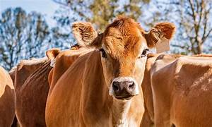
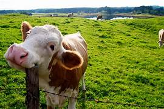
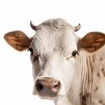

Alimentación
Las vacas se alimentan principalmente de pasto, heno, ensilado y suplementos nutricionales. La calidad del alimento impacta directamente en la producción de leche y la salud del animal.
Cuidados
Las vacas requieren revisiones veterinarias periódicas, ambientes limpios, acceso constante a agua fresca y control de parásitos para mantenerse saludables.
Curiosidades
¿Sabías que las vacas tienen excelente memoria social y pueden reconocer hasta 100 otras vacas?